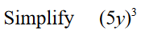
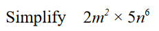
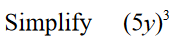
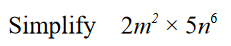

Rounding
1) Write 1485 to the nearest thousand.
2) Write 2.79 correct to 1 decimal place.
3) Write 90437 correct to two significant figures.
Estimation
1)
2)
2)
a) Work out an estimate for the area of the shape.
b) Is your answer to part (a) an underestimate or an overestimate?
Give a reason for your answer.
LCM and HCF
1) Write down the highest common factor, and lowest common multiple of 648 and 540.
2) John Smith is thinking of two numbers greater than 5.
After thorough calculation he finds that the HCF of these two is 5 and the LCM is 100.
Provided John Smith's thorough calculations are correct, find the two numbers he is thinking of.
Laws of indeces
1)

2)
3)

4)

5)
6)
2)
3)

4)

5)
6)